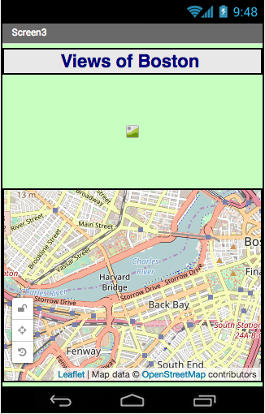
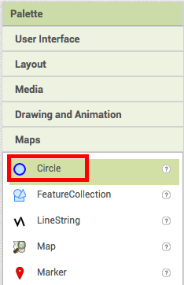
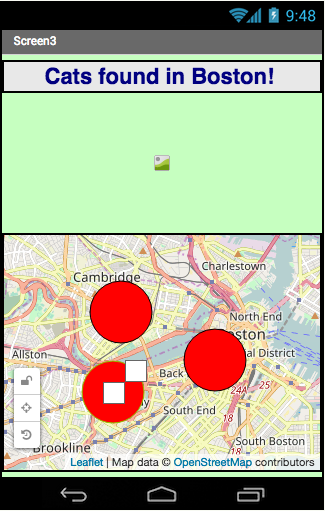
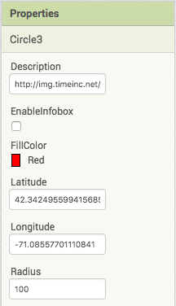
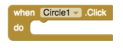
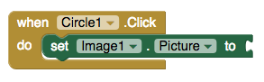
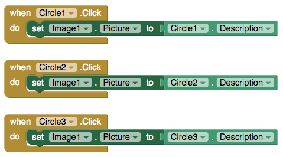

The Challenge
This app is meant to both teach the Map tool in App Inventor and challenge the way we see our surrounding community. By associating images with locations, the user will more easily be able to see what their city is like outside of their immediate surroundings.
Map Tutorial
Let's make an app that gives a user a map of different images around Boston.
Connect using the companion app so you can test this on your mobile device. If you don't know how to connect, click here.

Your app came with a Label, HorizontalAlignment, Image, and a Map.
Click Maps in the Palette and click and drag three circles onto the map.
Add them to specific points on the map.
Click on Circle1 and in the Properties panel, change the radius of the circle. Add the link to an image to the description. I used an image for MIT, an image for the Boston Symphony Orchestra, and an image for the Boston Public Library.
Repeat for all circles so your app looks something like this.

Now we're going to make the circles perform a small action.
Go to the upper right corner of the page and click Blocks to go to the Blocks page.

Click on Circle1 in the Blocks panel.

Click and drag "when Circle1.Click" to the viewer.
Click Image1 in Blocks.

Click and drag "set Image1.Picture to" to the Viewer.
Click Circle1 again and drag out "Circle1.Description" and connect to the other blocks.

Repeat with the other blocks so they look like this.
Try it out on your companion. Tap on the different circles. What happens?
Change up this basic tutorial by adding more features using the ideas in the next section.
Expand your app
Notify the user when they're getting close to a location.
Use the location sensor to tell the user when they're close to a marker.
Calculate the distance between user and a point.
Compare the user's location as given by the location sensor with the location of the markers tell the user how far they are from a marker.
Share the app
Click on "My Projects" button on the top menu bar.

Click on the project you want to share, then click on "Publish to Gallery" button.

Fill in all the details and click the "PUBLISH" button.

Click on "SHARE" button to get the link to the app.

Copy and paste the link in the space below.
Published apps